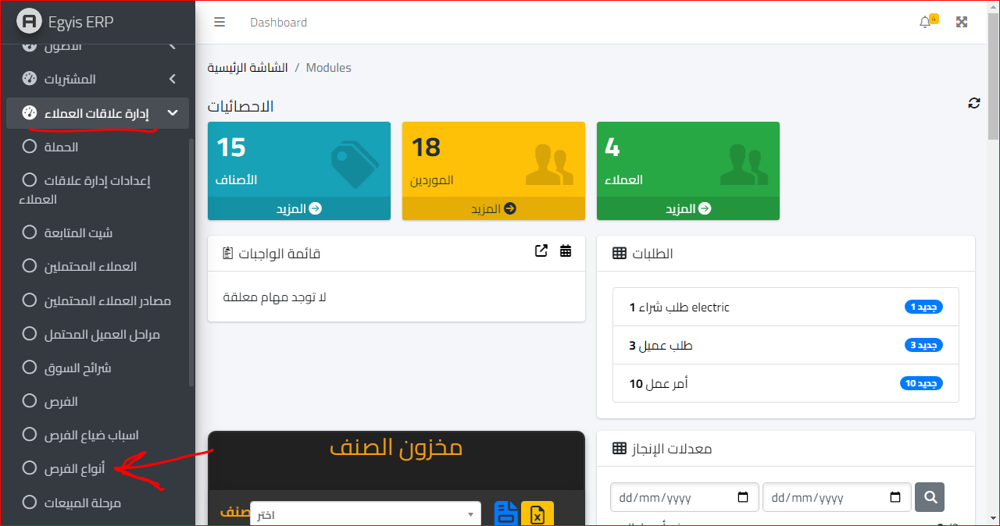
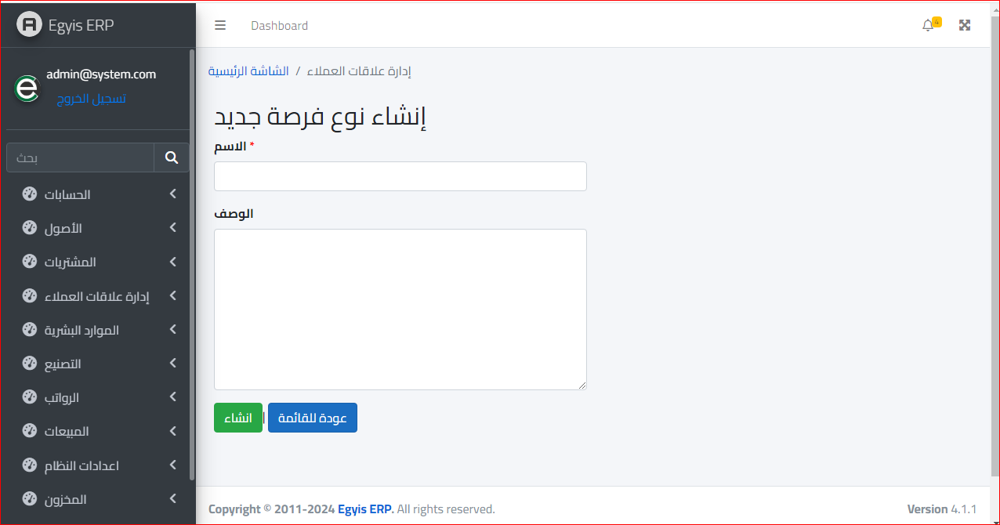
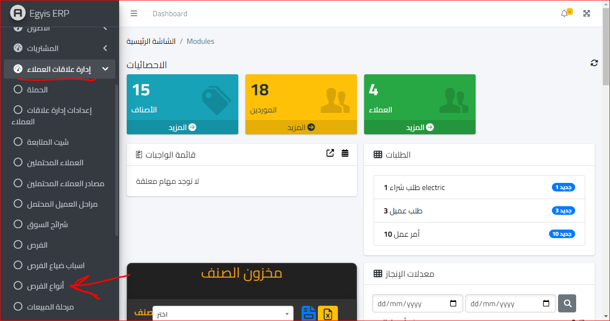
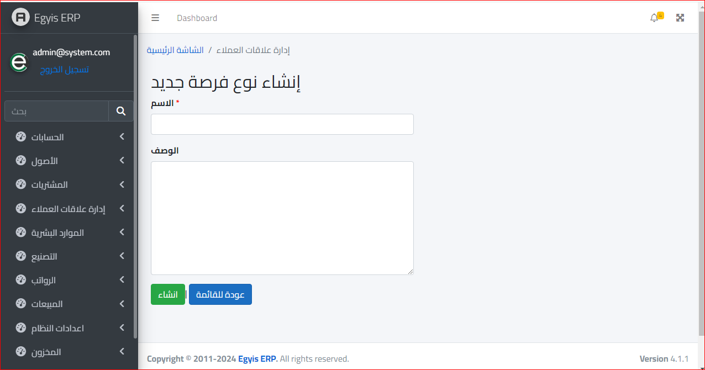

انواع الفرص
يتم فتح موديول إدارة علاقات العملاء ومنه نختار قائمة أنواع الفرص كالتالي :
ثم بعد ذلك ستفتح الشاشة التالية :

ثم بعد ذلك نختار إنشاء نوع جديد و سيتم توجيهنا الى الشاشة التالية :
وبعد الانتهاء نضغط انشاء
يتم فتح موديول إدارة علاقات العملاء ومنه نختار قائمة أنواع الفرص كالتالي :
ثم بعد ذلك ستفتح الشاشة التالية :
ثم بعد ذلك نختار إنشاء نوع جديد و سيتم توجيهنا الى الشاشة التالية :
وبعد الانتهاء نضغط انشاء